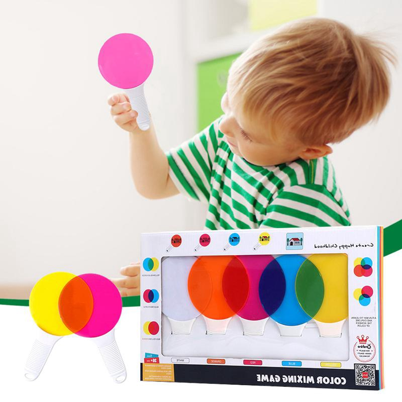

Permainan Menentukan Warna
Di mana setiap anak memiliki kreativitas atau kemampuan masing-masing dan setiap anak juga mempunyai bakat dan minat yang berbeda dengan anak yang lain, karena pada dasarnya setiap anak itu unik dan memiliki keistimewaan masing-masing, peran orang tua dan orang sekitar sangat dibutuhkan dalam membantu anak menyalurkan kreativitas yang ia miliki. Dalam mengembangkan kreativitas anak agar anak terus belajar menciptakan karya yang lebih bagus.
Lalu permainan apa yang dapat mengembangkan kreativitas anak? Salah satunya adalah permainan warna. Anak-anak sangat menyukai warna apalagi warna-warna yang sangat cerah. Saat mewarnai gambar meraka juga suka menggunakan warna-warna yang cerah baik itu warna biru, merah, kuning, jingga atau warna pelagi (mejikuhibiniu)
Permainan Warna bertujuan agar anak dapat memahami warna dan bagaimana mereka menentukan warna yang ditampilkan dalam layar
Cara Bermain :
- Klik Kotak dibawah bacaan "Mulai!"
- Setiap meng-Klik kotak maka warna akan terganti secara acak
- Jawab Warna yang muncul setelah di Klik di kolom jawaban
- Jawaban akan muncul dipojok kiri bawah. Jika salah, maka jawablah sampai benar
Mulai!
Jawabannya adalah :
Jawaban anda adalah :